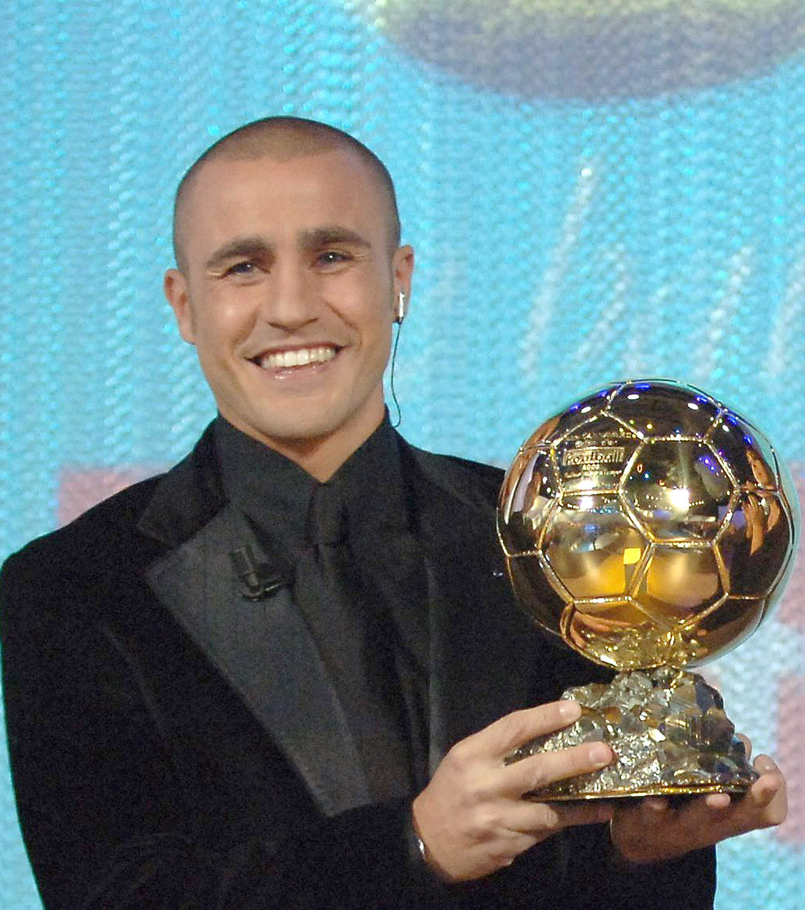
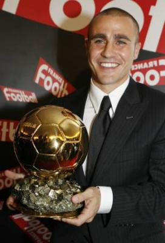
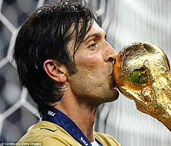
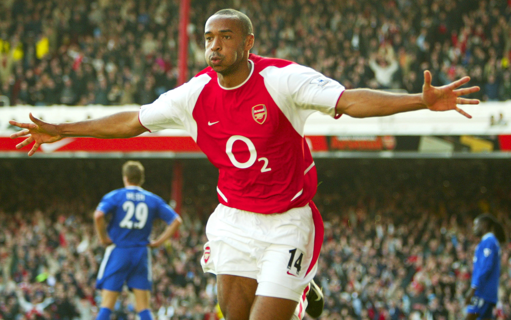

Fabio CANNAVARO - 2006

- Le doublé pour le joueur italien : Coupe du Monde et Ballon d'Or
Champion du monde avec l'Italie,
Fabio Cannavaro
est récompensé du Ballon d'Or France Football en 2006.
Nationalité : Italienne
Né le 13 septembre 1973, à Naples (Italie)
Taille : 1,76
Poids : 75 kg
Poste : défenseur
Clubs : Italsider Bagnoli (1983-84), Naples (1984-1995), Parme (1995-2002), Inter Milan (2002-2004), Juventus Turin (2004-2006), Real Madrid (2006-2009), Juventus Turin (2009-2010), Al-Ahli Dubaï (2010-2011)
Palmarès : Coupe du monde 2006 ; Championnat d'Europe Espoirs 1994, 1996 ; Coupe UEFA 1999 ; Championnat d'Espagne 2007 et 2008 ; Supercoupe d'Espagne 2008 ; Coupe d'Italie 1999, 2002 ; Supercoupe d'Italie 1999
Bilan en club : 691 matchs, 19 buts
Bilan en équipe d'Italie : 136 sélections, 2 buts
Bilan en phase finale de Coupe du monde : 4 participations (1998, 2002, 2006, 2010), 18 matches
Palmarès Ballon d'Or : vainqueur en 2006
Classement du Ballon d’Or France Football 2006 :

Fabio Cannavaro (Italie / Juventus Turin)

Gianluigi Buffon (Italie / Juventus Turin)

Thierry Henry (France / Arsenal)
Retour à l'accueil
 Fabio CANNAVARO - 2006
Fabio CANNAVARO - 2006